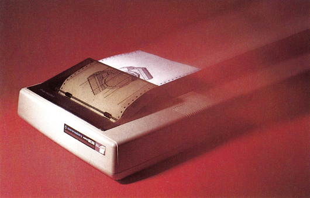
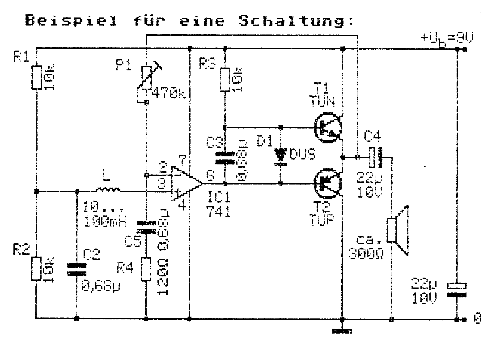
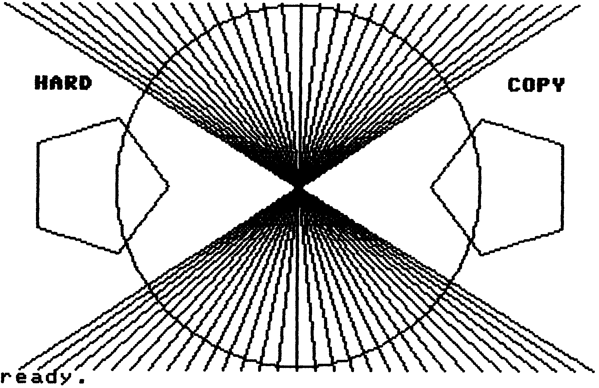
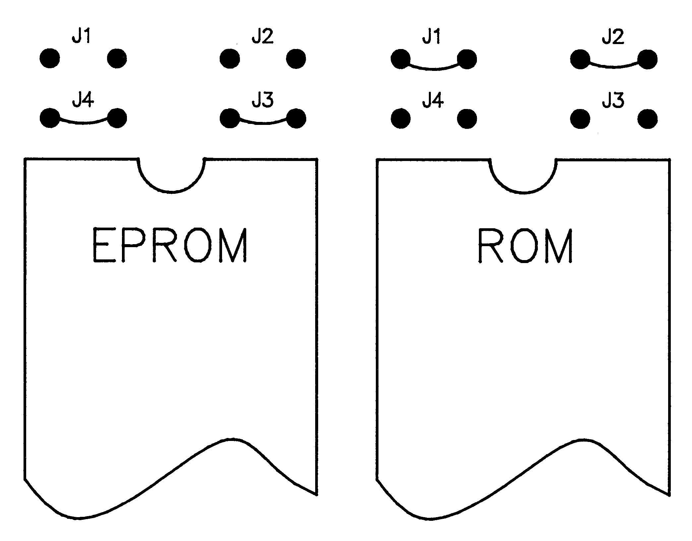

Das Super-ROM für den MPS 802
Dieses Betriebssystem eröffnet Ihnen völlig neue Möglichkeiten auf Ihrem MPS 802. Mit diesem zuverlässigen Drucker lassen sich nun Grafiken zu Papier bringen, wie es bisher nur Epson-kompatiblen Druckern vorbehalten war.

Wir präsentieren Ihnen ein neues Betriebssystem für Ihren MPS 802-Drucker, welches alle bisher dagewesenen Ergänzungen oder Erweiterungen in den Schatten stellt.
Alle stolzen Besitzer des MPS 802 werden aufhorchen, denn es steckt tatsächlich viel mehr in diesem Drucker, als man gemeinhin annimmt. Für diejenigen, die schon lange auf eine Erweiterung gewartet haben, um mit Programmen zu arbeiten, die Epson-kompatible Drucker unterstützen, wird dieses Betriebssystem genau das richtige sein.
Das neue System baut auf dem original Commodore-ROM Rev.07c auf. Dabei wurden jedoch einige Fehler des alten Betriebssystems ein für allemal beseitigt. Diese Fehlerbeseitigung bringt vor allem wesentliche Vorteile für die Geschwindigkeit des Druckvorganges. Dabei werden zum Beispiel Leerzeichen nicht mehr vom Drucker als zu druckendes Zeichen aufgefaßt, sondern es wird nur der Druckkopf entsprechend bewegt. Besonders macht sich dies bei Zeilen bemerkbar, die komplett aus Leerzeichen bestehen. Der MPS 802 fängt also nicht mehr an zu drucken, er gibt einfach einen Zeilenvorschub. Außerdem wurde das gesamte System gestrafft und somit auch schneller gemacht. Jetzt können Sie zum Beispiel Grafiken mit 640 Punkten pro Zeile ausdrucken. Das Vorteilhafte dabei ist, daß man Text und Grafik in einer Druckzeile beliebig mischen kann. Oder wie wäre es mit frei wählbaren Zeilenabständen? Für das neue Grafik-ROM ist dies kein Problem. Sie können zum Beispiel den Zeilenvorschub von 1/6 Zoll Standardwert, ausgehend in 72stel- oder sogar 216tel-Zoll-Schritten, auf jeden beliebigen Wert einstellen. Außerdem sind noch viele andere nützliche Routinen enthalten, auf die man bisher bei diesem Drucker verzichten mußte; zum Beispiel mehrere Zeichensätze, wobei man zwischen zwei deutschen (DIN und ASCII) und einem englischen wählen kann. Weiterhin ist die deutsche Papierlänge mit 72 Zeilen voreingestellt und man kann auf einfache Weise einen Drucker-Reset senden. Als besonderes Bonbon ist das benutzerdefinierte Zeichen beim Einschalten des MPS 802 schon mit einem Telefonsymbol vorbelegt und kann daher sofort angesprochen werden.
Die einzelnen neuen Möglichkeiten werden entsprechend dem Epson-Standard mit den von dort bekannten Escape-Sequenzen aktiviert.
Sollten Sie also stolzer Besitzer eines MPS 802 sein, dann lassen Sie sich diese Anwendung des Monats nicht entgehen. Sie zeigt, was sich tatsächlich noch alles aus Ihrem Drucker herausholen läßt und macht ihn somit vergleichbar zu anderen Epson-kompatiblen Druckern.
(Felix Huber/jk)Das Super-ROM für den MPS 802
Drucken mit dem MPS 802 wie noch nie zuvor. Mit diesem neuen Betriebssystem zeigt der zuverlässige MPS 802 erst, was tatsächlich in ihm steckt und wird vergleichbar zu wesentlich teureren Druckern.
Mit überraschenden Eigenschaften kann der MPS 802 aufwarten, wenn Sie ihn mit dem neuen Grafik-ROM ausrüsten. Was bisher nur Epson-kompatiblen Druckern möglich war, ist damit in greifbare Nähe gerückt. Das neue Betriebssystem wurde vom Autor dieser Anwendung des Monats nach gründlichem Studium der alten Commodore-Version 07c entworfen. Dabei wurden unter anderem folgende Fehler beseitigt:
- Wenn dem Drucker nur Leerzeichen geschickt werden, bewegt sich der Druckkopf, obwohl es effektiv gar nichts zu drucken gibt. Dies bedeutet eine nicht unerhebliche Zeitverschwendung. Sollte man außer vielen Leerzeichen am Ende auch noch ein Steuerzeichen senden, so würde der MPS 802 die nächste Zeile rückwärts ausdrucken.
- Wenn der Drucker mehr als 80 druckbare Zeichen plus vier Steuerzeichen im Puffer hat, erfolgt ein Ausdruck ohne Vorschub und anschließenden Tabulator auf die letzte Druckposition. Dagegen wäre an sich nichts einzuwenden. Der MPS 802 macht dies jedoch auch beim bidirektionalen Druck, so daß die Steuerzeichen nicht mehr richtig gesetzt werden. Ist außerdem noch die Breitschrift eingeschaltet, dann rast der Druckkopf äußerst unsanft gegen den rechten Anschlag.
- Wenn der Drucker auf unidirektionalen Druck umgeschaltet hat, werden führende Leerzeichen nicht übergangen, wie dies bei bidirektionalem Druck gemacht wird. Der Erfolg ist, daß der Kopf erst ganz nach links fährt, um dann eventuell erst in der Mitte wieder mit dem Druck fortzufahren. Auch das ist eine erhebliche Zeitverschwendung.
- Die Sekundäradresse 5 benötigt durch einen falschen Sprung im Betriebssystem immer zwei CR, um keine Fehlermeldung am Drucker zu erzeugen. Das fällt natürlich vor allem bei aktivierter Fehlerdiagnose auf.
Diese Fehler wurden im neuen Betriebssystem berücksichtigt und ausnahmslos beseitigt.
Die Steuerbefehle
Zunächst einmal folgende wichtige Veränderungen am Betriebssystem:
Beim Einschalten des Druckers ist die deutsche Papierlänge schon eingestellt und beträgt 66 Zeilen plus 6 Zeilen Paging, also insgesamt 72 Zeilen. Paging bedeutet in diesem Zusammenhang den gesamten Zeilenvorschub der am Ende eines gedruckten Blattes gesendet wird, damit auf dem neuen Blatt weitergedruckt werden kann.
Der Druckkopf bewegt sich nur noch wenn es etwas zu drucken gibt, was bedeutet, daß eine reine Leerzeile nicht mehr gedruckt wird, sondern es wird nur noch Zeilenvorschub gegeben.
Das benutzereigene Zeichen ist nach einem Reset mit einem Telefonsymbol vorbelegt.
Alle neuen Steuerbefehle werden mit der sogenannten Escape-Sequenz erreicht. Escape hat den ASCII-Code 27 und schaltet auf die neuen Befehle um. Im folgenden wird Escape mit ESC abgekürzt. Das heißt anstelle von ESC ist CHR$(27) an den Drucker zu senden, nicht etwa der Text »ESC«. Auf dem C 64 ist ESC auch über die Tastatur zu erreichen, indem man <CTRL> und <Eckige Klammer auf> gleichzeitig drückt. Auf dem Bildschirm erscheint dann eine reverse Klammer.
Nun zu den Escape-Sequenzen im einzelnen. Sie sind kompatibel zum ESC/P-Standard von Epson. So wird beispielsweise eine Hardcopy mit Programmen, die Epson-Drucker ansprechen, möglich. Alle anderen Original-Funktionen des MPS 802 sind aber noch beibehalten worden. Wenn man in einem Programm als Druckertyp Epson eingibt, ist Groß- und Kleinschreibung vertauscht, da der Zeichensatz natürlich immer noch CBM-kompatibel geblieben ist. Dies ist zum Beispiel bei einer Hardcopy mit Hi-Eddi der Fall. Will man bei Hi-Eddi auch die Bildunterschrift eingeben, muß dabei Groß- und Kleinschrift vertauscht werden. Hi-Eddi rechnet nämlich die CBM-Codes in ASCII-Werte um, die von einem Epson-Drucker benötigt werden.
Um die Arbeit mit Hi-Eddi zu erleichtern geben wir Ihnen gleich noch die Eingaben für die Druckeranpassung mit. Im Menü des Einstellungsprogramms »Drucker« wählen Sie die Option 5 (andere Epson-kompatible). Danach geben Sie bitte zu jeder Frage die im folgenden aufgeführte Antwort nacheinander ein:
- 4
- 7
- n
- ESC '*' 4
- n
- ESC '*' 20
- ESC '3' 19
- ESC '3' 1
- ESC '2'
- 20
- u
So erzielen Sie mit Hi-Eddi optimale Ergebnisse (Bild 1). Aber auch in Basic kann man hervorragend mit dem Super-ROM arbeiten. Dies verdeutlicht Bild 2. Die Hardcopy wurde mit einer Basic-Erweiterung erstellt und wie man sieht wurde für den Kreis vom Bildschirm ein tatsächlicher Kreis gedruckt, nicht etwa ein Ellipsoid.


Steuerbefehle senden
Im folgenden sind alle Steuerbefehle, über die Sie mit dem neuen System zusätzlich verfügen können, einzeln aufgeführt:
- ESC 0 setzt den Zeilenabstand auf 1/8 Zoll. Beispiel:
10 PRINT#1,CHR$(27);"0";Man sieht hier, daß keine Sekundäradresse mehr gebraucht wird.
- ESC 1 setzt den Zeilenabstand auf 7/72 Zoll.
- ESC 2 setzt den Zeilenabstand auf 1/6 Zoll (Default).
- ESC 3 n setzt den Zeilenabstand auf n/216 Zoll, zum Beispiel:
10 PRINT#1,CHR$(27);"3";CHR$(41);ergibt 41/216 Zoll Zeilenabstand.
- ESC A n setzt den Zeilenabstand auf n/72 Zoll. Für Hardcopies ist ein günstiger Wert hier n=7.
- ESC C n legt die Papierlänge auf n Zeilen fest, wobei n zwischen 1 und 127 liegen muß. Wirkt genauso wie Sekundäradresse 3.
- ESC C CHR$(0) n legt die Papierlänge auf n Zoll fest. Zu beachten ist jedoch, daß der Drucker immer noch sechs Zeilen dazuzählt, wegen dem Paging.
- ESC K LO HI d d d... schaltet auf Grafik um. Es werden 640 Punkte pro Zeile gedruckt. Überzählige Bytes werden verschluckt. LO und HI sind die Anzahl der zu druckenden Grafikbytes. Es gilt dabei:
HI=INT(Anzahl/256),
LO=Anzahl-HI*256Die Anzahl der Grafikbytes sollte durch acht teilbar sein, falls nicht, so wird der fehlende Rest vom Drucker automatisch mit Nullbytes gefüllt.
d d d... sind die zu druckenden Bytes. Jedes Byte gilt für eine ganze Druckspalte und wird genauso berechnet, wie bei Sekundäradresse 5 (siehe Handbuch des Druckers). Als Puffer für die Grafikdaten wurde der Speicher für den Formatstring zweckentfremdet. Wurde Grafik gedruckt, ist der Formatstring gelöscht. Gegebenenfalls muß er nochmals zum Drucker gesendet werden, um eine formatierte Ausgabe zu erreichen. Ansonsten gibt es keine Hindernisse mehr. Insbesondere wirken auch die Steuerzeichen weiterhin, man kann also die Grafik auch revers und in Breitschrift drucken. Dies hat den Vorteil, daß man nur 320 Byte für die volle Breite des Papiers braucht und der Ausdruck somit schneller wird.
- ESC * n LO HI d d d... schaltet ebenfalls auf Grafik um. n ist bei Epson ein Wert zwischen 0 und 6 und wählt die Auflösung aus. Da der MPS 802 jedoch nur 640 Punkte pro Zeile drucken kann, ist der Wert von n hier frei wählbar. Diese Sequenz wurde nur aus Kompatibilitätsgründen eingebaut. Grafik und Text dürfen in einer Zeile beliebig gemischt werden.
- ESC R n legt den Zeichensatz fest. Dabei bedeutet n=0 englisch, n=1 deutsch an CBM angepaßt und n=2 deutsch nach DIN zum Beispiel für Vizawrite. Der so eingestellte Zeichensatz bleibt bis zum nächsten ESC R eingestellt. Will man nur für eine Zeile umschalten, so kann man CHR$(2) für deutsch und CHR$(130) für englische Zeichensätze verwenden. In einer Zeile kann auch beliebig zwischen den Zeichensätzen umgeschaltet werden.
- ESC <Klammeraffe> löst einen Reset des Druckers aus, wie bei Sekundäradresse 10.
Eingabehinweise
Um das neue Grafik-System auf Ihrem Drucker zu installieren, muß das zugehörige Listing »ROM 2« auf ein EPROM vom Typ 2764 gebrannt werden. Geben Sie bitte dazu das Listing mit dem MSE ein und speichern es auf Diskette. Danach können Sie es als Basic-Programm laden und mit RUN starten. Das Programm wird automatisch entpackt und es wird ein Reset ausgelöst. Die auf EPROM zu brennenden Daten des neuen Betriebssystems stehen nun von $1000 bis $3000 im Speicher Ihres C 64. Speichern Sie bitte diesen Bereich mit einem Monitor auf Diskette (denken Sie daran, daß fast jeder Monitor die Angabe ENDE +1 als Endadresse benötigt). Jetzt können Sie den EPROMer anschließen, die Software laden und das EPROM brennen.
Falls Sie unsere Anwendung des Monats allerdings auf Diskette über den Leserservice bestellen, so können Sie das darauf befindliche Programm direkt auf ein EPROM brennen. Dieses Original-File braucht natürlich nicht mehr entpackt zu werden.
Beim Einsetzen des neuen EPROMs in den Drucker müssen Sie dann noch folgendes beachten. Sollte Ihr Drucker das Betriebssystem normalerweise in einem ROM enthalten, so müssen Sie noch zwei Lötbrücken umlöten (Bild 3). Für ein ROM müssen die Lötbrücken J1 und J2 geschlossen sein, während J3 und J4 offen sind. Um nun ein EPROM einzusetzen, öffnen Sie die Lötbrücken J1 und J2 und schließen J3 und J4. Anhand der Einstellung dieser Lötbrücken läßt sich somit immer kontrollieren, ob Ihr Drucker mit einem ROM oder EPROM arbeitet.

Bleibt uns nur noch, Ihnen viel Spaß mit dem neuen Super-ROM zu wünschen.
(Felix Huber/jk)